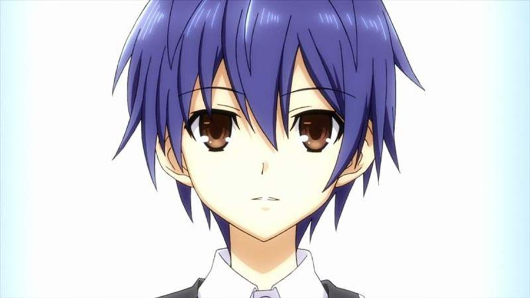
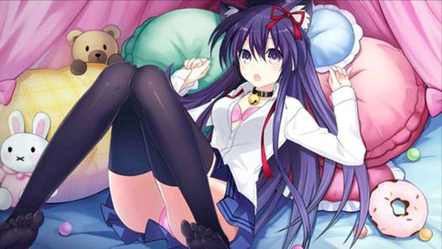
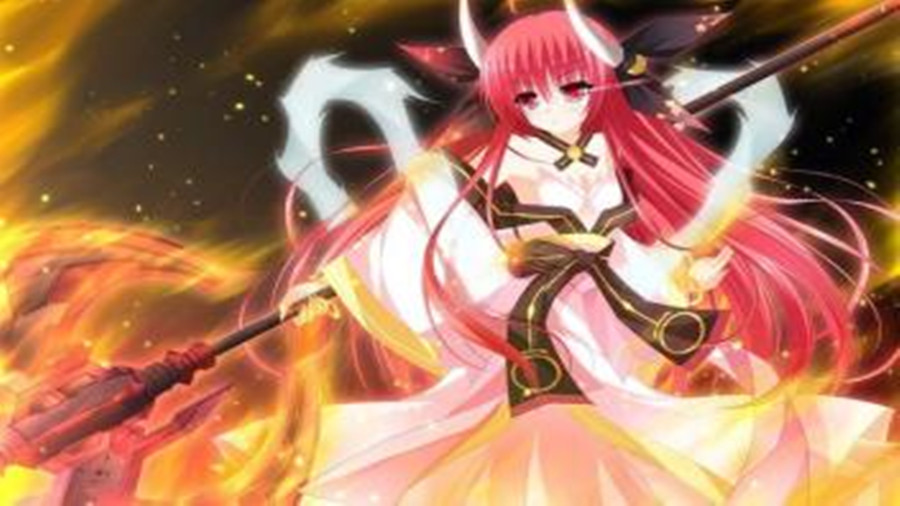
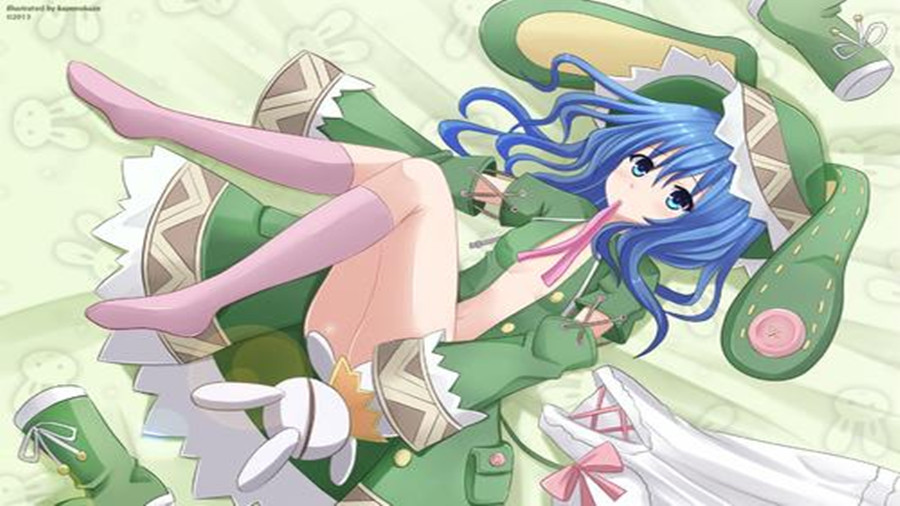
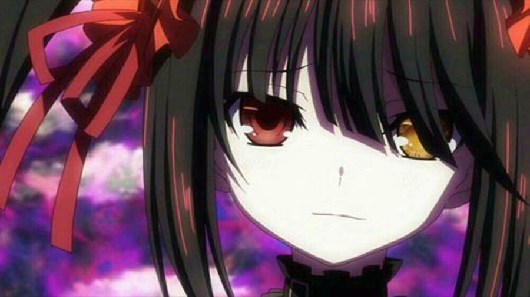
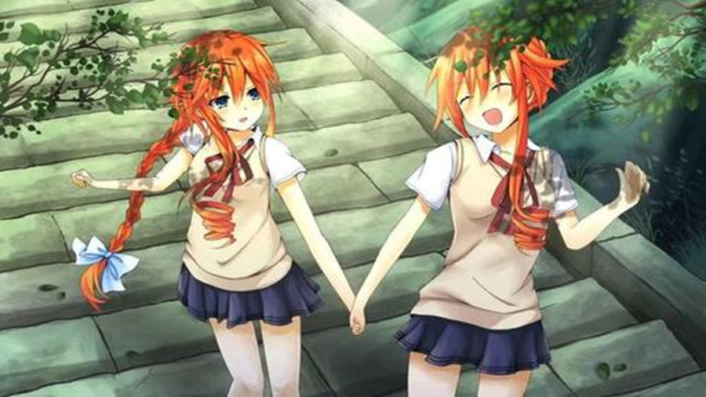
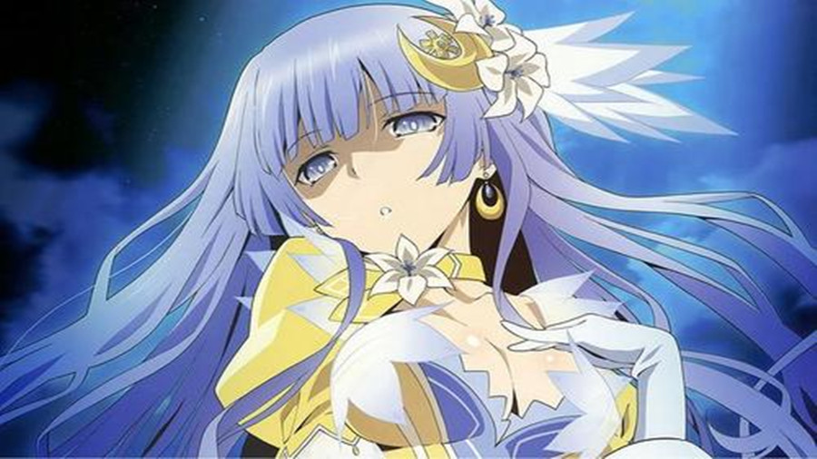

Revolver
Rose or Revolver Love or Lie Right or Left
约会大作战登场人物介绍

五河士道（いつか しどう）
CV：岛崎信长/藏合纱惠子（士织的CV）
本作男主角，都立来禅高中2年级生，16岁。

夜刀神十香（やとがみとおか）
（第一精灵）
CV：井上麻里奈
本篇女主角。识别代号：Princess（公主）
鸢一折纸（とびいち おりがみ）
（第八精灵）
CV：富樫美铃
本篇女主角之一，外传漫画《约会大进击》的主角，识别代号：Angel（天使），反转体识别代号：Devil（恶魔）

五河琴里（いつか ことり）
（第四精灵）
CV：竹达彩奈
识别代号：Efreet（炎魔）。

冰芽川四糸乃（よしの）
（第二精灵）
CV：野水伊织
小说第二卷登场的人物。识别代号：Hermit（隐居者）

时崎狂三（ときさき くるみ）
（第三精灵）
CV：真田麻美
小说第三卷登场的人物。识别代号：Nightmare（梦魇）
八舞耶俱矢（やまい かぐや）
（第五精灵）
CV：内田真礼
小说第五卷登场的人物，识别代号：Berserk（狂战士）。

八舞夕弦（やまい ゆづる）
（第五精灵）
CV：布里德卡特·塞拉·惠美
小说第五卷登场的人物。识别代号：Berserk（狂战士）

诱宵美九（いざよい みく）
（第六精灵）
CV：茅原实里
小说第六卷登场的人物。识别代号：Diva（歌姬）
七罪（なつみ）
（第七精灵）
CV：真野あゆみ [14]
小说第八卷登场的人物。识别代号：Witch（女巫）
 本条二亚（ほんじょう にあ）
本条二亚（ほんじょう にあ）
（第九精灵）
小说第十三卷登场的人物。识别代号：Sister（修女）
星宫六喰（ほしみや むくろ）
（第十精灵）
小说第十四卷登场的人物。识别代号：Zodiac（星宫）
崇宫澪
村雨令音
崇宫澪（たかみやみお）
（初始精灵）
CV：远藤绫
小说第十八卷登场的人物。识别代号：Deus（神）